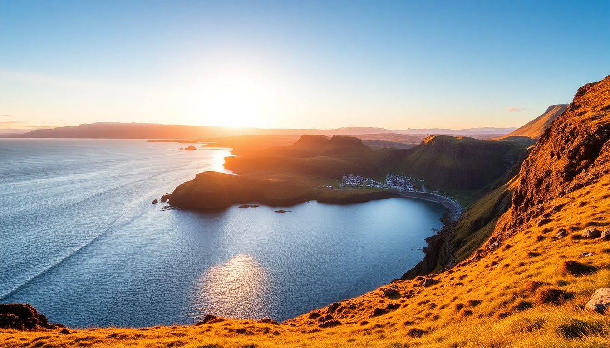

Best Time to Visit Iceland: Month-by-Month Guide

I’ve been to Iceland four times now, in four different seasons, and I’ve learned that “best” depends entirely on what you want. If you’re chasing the Northern Lights, you’ll hate July. If you want to hike the highlands, December will disappoint. This guide breaks down each month by weather, daylight, crowds, and cost—so you can pick the time that fits your trip, not someone else’s Instagram feed.
When is the best time for Northern Lights?
From late September through mid-March, you’ve got a real shot. I saw them best in early November near Vik, where the black sand beaches and low light pollution make the sky feel huge. You need three things: darkness, clear skies, and solar activity. The equinox months (September and March) statistically have more geomagnetic storms, but I’ve had luck in February too.
- Reykjavik has too much light pollution—drive 20 minutes out to Grótta Island Lighthouse or join a tour from BusTravel Iceland.
- Akureyri in the north is excellent; we stayed at Hotel Akureyri and walked five minutes to the waterfront.
- Vik offers dark skies but unpredictable coastal weather. We waited two nights for a break in the clouds.
- Avoid the Blue Lagoon at night—it’s booked solid and the steam blocks the view. Go to Sky Lagoon in Reykjavik instead if you want a soak with aurora potential.
When is the best time for road trips and Ring Road driving?
June through August is the sweet spot. The Ring Road is fully open, snow-free, and you get nearly 24-hour daylight. I drove it in July and never needed headlights after 10 PM. But it’s also peak season—campervans clog the parking lots at Seljalandsfoss and Skógafoss.
- May and September are my real favorites. Roads are mostly clear, crowds thin out, and you can still do the full loop if you watch weather reports.
- Akureyri to Mývatn in September had fall colors and zero traffic.
- Avoid the F-roads (highland tracks) outside July and August unless you’ve got a 4x4 and serious patience. I tried the Fjallabak route in late June and hit snow patches.
- Vik is a good overnight stop on the Ring Road. We ate at Suður-Vík—solid lamb soup, nothing fancy.
When is the cheapest time to visit Iceland?
October through March, excluding the Christmas and New Year’s window. Flights from the US and UK drop by half, and hotels in Reykjavik like Hotel Borg or Kex Hostel offer deep discounts. I paid $80 a night for a private room at Kex in November—same room was $200 in July.
- Blue Lagoon tickets are cheaper in winter (around 60 USD vs. 90 USD in summer), but book two weeks ahead anyway.
- Gas prices don’t change, but car rentals drop. I used Blue Car Rental for $35/day in February.
- Food is still expensive. A burger at Bæjarins Beztu Pylsur (the famous hot dog stand in Reykjavik) is your budget friend year-round—about $5.
- Akureyri in winter has cheap lodging at Hotel Norðurland, but many restaurants close on Sundays.
When is the best time to visit the Blue Lagoon?
The Blue Lagoon is a geothermal spa, not a swimming pool, and it’s crowded every month. But the experience changes with season. I went in late August and again in early March—August was warm and bright, March had snow on the rocks and steam rising thick.
- March and April: low crowds, snow on the lava fields, and cheaper entry. We walked right in at 10 AM.
- June to August: book at least three weeks in advance. The water hits 39°C, but the air is warm too—less dramatic.
- December: festive lights, but expect rain and wind. The lagoon stays open, but the walk from the changing room is brutal.
- Skip the in-water bar—it’s overpriced and the line is long. Focus on the silica mud masks and the sauna.
When is the best time for hiking and outdoor activities?
July and August are prime for hiking. The Laugavegur Trail (from Landmannalaugar to Þórsmörk) is only accessible from late June to early September. I did it in mid-August—rivers were low, huts were open, and the rhyolite mountains looked like a painting.
- Skaftafell National Park has glacier hikes year-round, but summer gives you longer windows. We booked with Arctic Adventures for a 3-hour walk on Svinafellsjökull.
- Snæfellsnes Peninsula is great in May and September—fewer people at Kirkjufellsfoss and Djúpalónssandur beach.
- Akureyri offers whale watching from April to October. Húsavík (an hour north) is better, but Akureyri’s harbor is fine.
- Winter hiking is possible but requires crampons and a guide. I wouldn’t do it without one.
When is the best time to avoid crowds?
Late April, early May, and September. The tourist numbers drop sharply after the summer rush and before the winter light-chasers arrive. I spent a week in Reykjavik in early May and had Hallgrímskirkja church almost to myself.
- Vik in September: the Reynisfjara black sand beach had maybe 20 people instead of 200.
- Blue Lagoon in late April: we booked same-day tickets.
- Akureyri in early May: still quiet, but the Arctic Henge near Raufarhöfn was deserted.
- Downside: some mountain roads and campsites don’t open until June. Check road.is before you go.
FAQ
Can I see the Northern Lights in summer? No. From mid-May to mid-August, Iceland has near-24-hour daylight, so the sky never gets dark enough. You need darkness, which you only get from September to March.
Is the Blue Lagoon worth the hype? It’s fine, but overpriced. The water is nice, the silica mud is fun, but it’s basically a large hotel pool with a view. I prefer Sky Lagoon in Reykjavik for the seven-step ritual and ocean view, or Mývatn Nature Baths near Akureyri for a quieter experience.
What’s the worst month to visit Iceland? November. It’s dark (only 5–6 hours of daylight), rainy, and windy. Roads are icy but not snowy enough for winter activities. I went once in November and spent most of the trip in a café in Reykjavik reading—fun for a day, not for a week.
Conclusion
- For Northern Lights: September to March, with November and February being my top picks.
- For road trips and hiking: June to August (or May/September for fewer people).
- For budget: October through March (skip December for prices).
- For avoiding crowds: late April, early May, or September.
- For the Blue Lagoon: March or April—cheaper, less crowded, and snow on the ground.